Nine openings for the homepage
The first three scrolls (Hero, Manifesto and The Atulyash way), in nine directions, designed phone first. 1 to 6 come from the inspiration styles; 7 to 9 put freshness first. Free stock photos are credited in CREDITS.md.
-
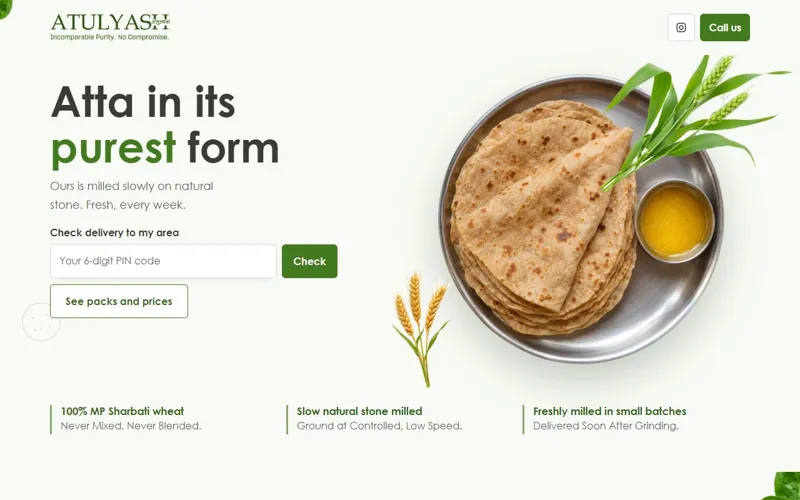

Fresh photo collage
1. Rasoi Collage
Bright and fresh, like a grocery app. A round plate of rotis, leaves breaking past the edges, a PIN check up top.
Open Rasoi Collage -
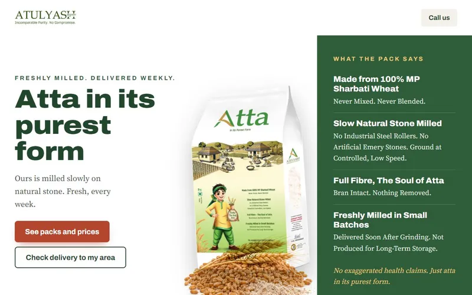
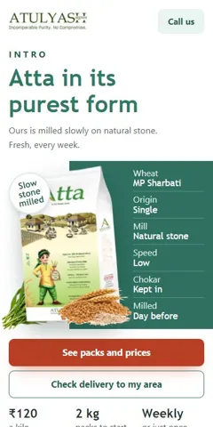
Product first
2. The Pack Speaks
The pouch sits on a teal panel of plain facts, with a real photo of grains and six mint cards below.
Open The Pack Speaks -
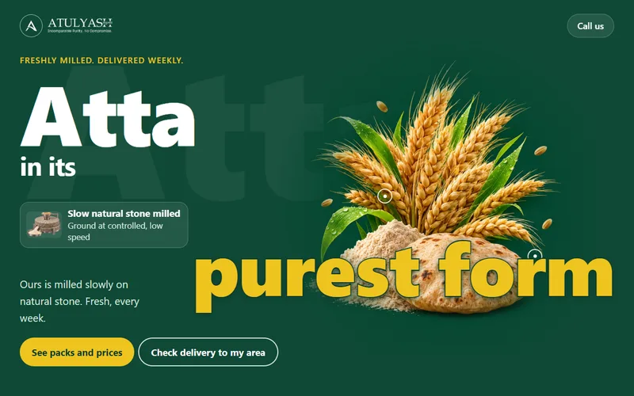
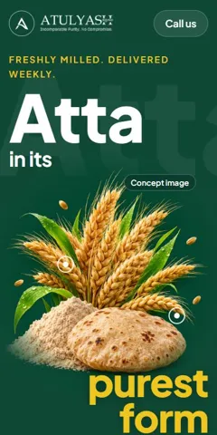
Dark immersive
3. Deep Green
Deep green and yellow. Giant split headline around one wheat cluster, glass cards, Veer in a frame.
Open Deep Green -
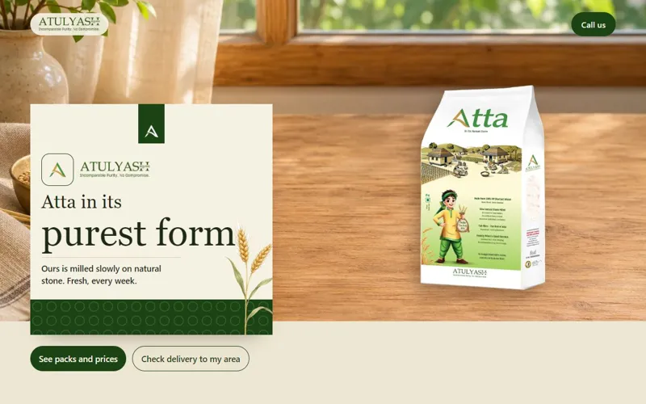
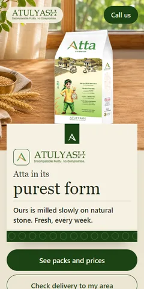
Botanical heritage
4. Botanical Label
Calm and crafted. A cream label card over the pack on a wooden table, a patterned green band, a round stamp for Veer.
Open Botanical Label -
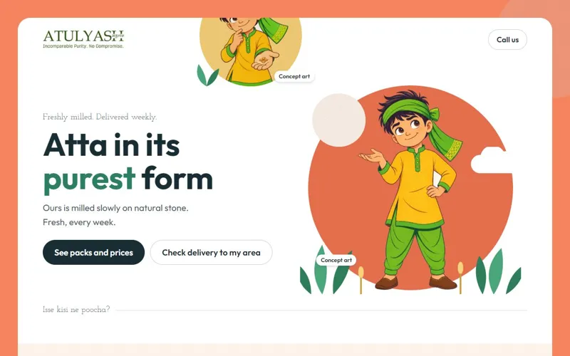
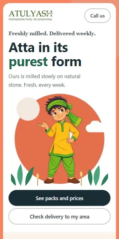
Grainy flat illustration
5. Veer's Village
Warm and playful. A white card on orange, Veer in grainy flat circles, one purple block.
Open Veer's Village -
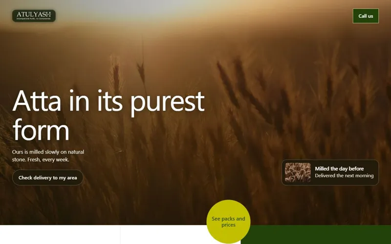
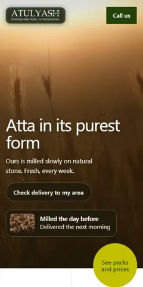
Wheat field photo
6. Golden Field
Open and sunlit. A real wheat field photo, frosted glass cards, a chartreuse circle and colour blocks.
Open Golden Field -
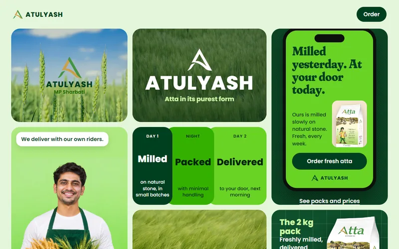
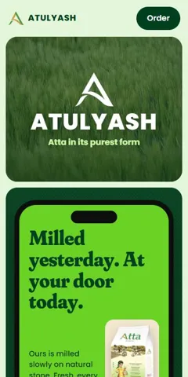
Fresh brand board
7. Green Board
Freshness first. Rounded tiles in three greens, a slow wheat field video behind the logo, a phone saying "Milled yesterday. At your door today."
Open Green Board -
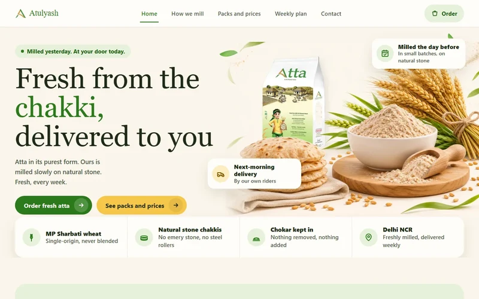
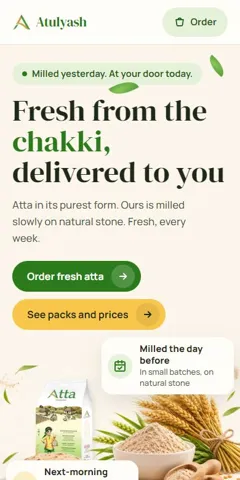
Fresh produce shop
8. Morning Market
Freshness first. Warm cream, a big serif headline, the pack in a spread of atta, wheat and rotis, floating fact cards.
Open Morning Market -

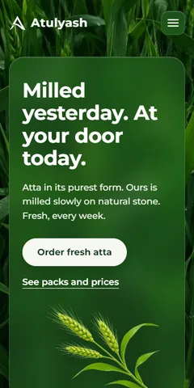
Frosted glass on a wheat wall
9. Glass Field
A dark wall of young wheat behind the page. Each section is one big frosted green card, with a wheat sprig, Veer or the pack breaking out of its edge.
Open Glass Field